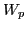

If the longitudinal wave is an electron plasma wave, then the wave energy
consists of two components, the energy of the electric field and the averaged
kinetic energy of the particle oscillations,
where is the energy density of the electric field averaged in one
wavelength, which is given by
 is the averaged kinetic energy of the particle oscillations, which, for
electron plasma wave, is equal to the electric field energy
[3]. Using these results, equation (40) is
written
The energy conservation requires that the kinetic energy gained by the
resonant particles must come from the wave energy, i.e.,
Using Eq. (42), equation (43) can be written
where
is the electron plasma
frequency. Define
then Eq. (44) is written
which can be integrated to give
The damping rate of the amplitude of the electric field given by Eq.
(45) agrees the Landau damping in the weak growth rate approximation
(equation (8-19) in Stix's book[4]).
yj
2016-01-26